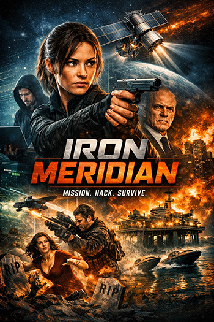
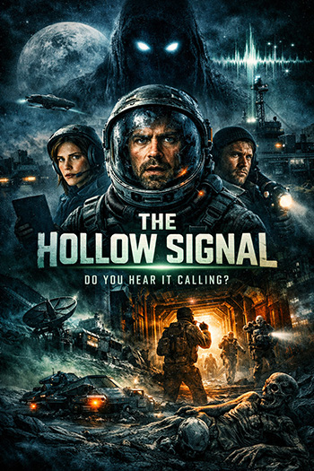
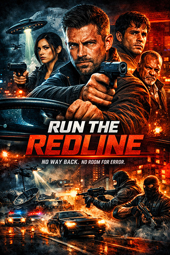
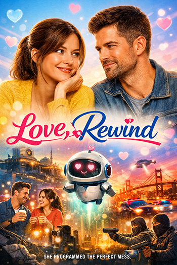
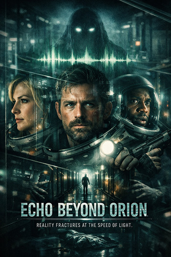

New in Theaters
Shadowline (2026)

A covert agent discovers a government black‑ops program targeting civilians. Fast‑paced, stylish, and packed with tension.
Genre: Action / Thriller
Rating: ★★★★
Deathblow (2026)

When a covert operation goes catastrophically wrong, elite operative Jack Rainer is framed for treason and hunted by the very agency he once served.
Genre: Action / Thriller
Rating: ★★★★★
Plan 9 from Outer Space (2026)

When mysterious lights appear over the California desert, humanity dismisses them as another UFO hoax — until the dead begin to rise. An alien race, desperate to stop Earth’s scientists from creating a doomsday weapon, launches Plan 9, a chilling experiment that reanimates corpses to serve as soldiers in their cosmic war.
Genre: Sci-Fi / Action
Rating: ★★★☆☆
New Movies on DVD/Streaming
Iron Meridian (2025)

A rogue intelligence officer uncovers a weapons‑tracking satellite that’s been hijacked by a private military contractor. With 24 hours before the system goes live, she teams up with a disgraced hacker to infiltrate a fortified offshore data fortress.
Genre: Action / Espionage
Rating: ★★★★☆
The Hollow Signal (2025)

After a deep‑space research vessel receives a repeating distress call from an uncharted moon, the crew discovers an abandoned colony where every piece of technology still runs — but no humans remain. As they investigate, the signal begins rewriting their ship’s systems… and their minds. Atmospheric, eerie, and slow‑burn terrifying.
Genre: Sci-Fi / Horror
Rating: ★★★★★
Run the Redline (2025)

A getaway driver trying to go straight is pulled back into the underworld when his brother steals from a cartel. To save him, he must complete one last impossible job: a cross‑city courier run through police checkpoints, rival crews, and a ticking clock. Stylish neon visuals and relentless pacing.
Genre: Thriller / Crime
Rating: ★★★☆☆
New TV Shows
Love, Rewind (2026)

In a near‑future San Francisco, a socially awkward robotics engineer accidentally creates an AI dating assistant that starts rewriting her love life — literally. As the bot learns from her romantic missteps, it begins matchmaking her with people she’s sworn off, forcing her to confront what “compatibility” really means.
Genre: Romantic Comedy
Rating: ★★★★☆
The Glass Corridor (2026)
A high‑rise security consultant discovers that the skyscraper she helped design is being used for covert surveillance and blackmail. When her own life becomes part of the data stream, she must navigate a deadly maze of corporate espionage and psychological manipulation.
Genre: Thriller
Rating: ★★★★★
Echo Beyond Orion (2026)

After a deep‑space expedition loses contact with Earth, the surviving crew begins hearing voices from their past — transmitted through the ship’s failing communications array. As reality fractures, they realize the signal isn’t coming from home… it’s coming for them.
Genre: Horror / Sci-Fi
Rating: ★★★★☆
About Us
Welcome to Hype Movies, where stories come alive beyond the screen. We’re a team of film lovers, creators, and critics dedicated to bringing you fresh perspectives on cinema — from indie gems to blockbuster premieres. Our mission is simple: celebrate storytelling in all its forms and make discovering your next favorite movie effortless.
What We Do
- Curated Reviews: Honest, spoiler‑free insights written by people who love movies as much as you do.
- Original Features: Behind‑the‑scenes articles, interviews, and creative spotlights on emerging filmmakers.
- Community Picks: A space for fans to share ratings, reactions, and recommendations.
Our Vision
We believe movies aren’t just entertainment — they’re cultural snapshots, emotional journeys, and creative experiments worth exploring. Whether you’re here to find tonight’s watch or dive deep into cinematic craft, we’re here to guide you through the reel world.
Contact Us
Tel: 1-888-555-1234
Email: info@hypemovies.com